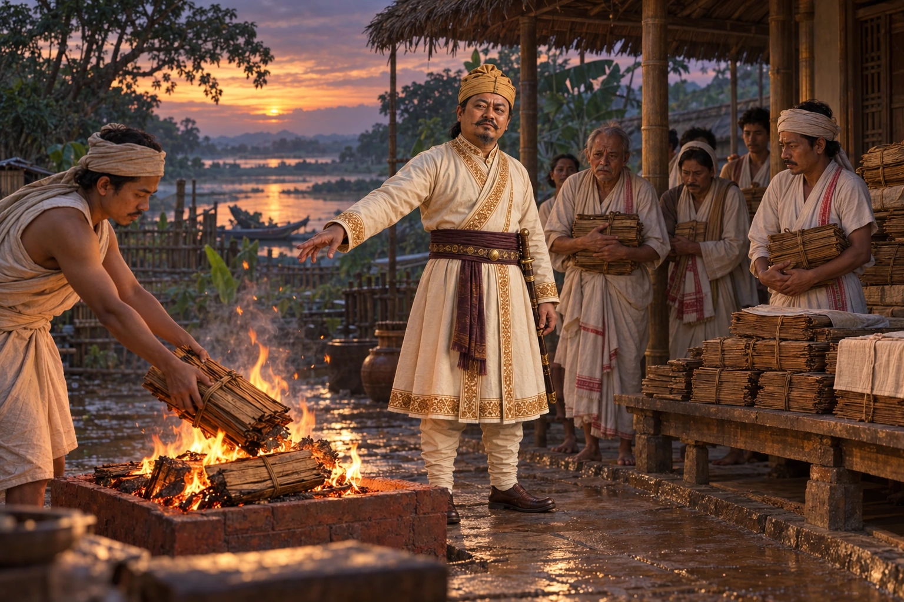

The Burning of the Buranjis
c. 1750s–1760s · The Tungkhungia kings

Stung by the Chakari-pheti Buranji's mockery of his low birth, Kirti Chandra Borbarua has the Buranjis collected and burns those he judges false. Some copies survive.
Most sources place this under Rajeswar Singha; some under Lakshmi Singha. Selected chronicles are destroyed while other records survive. Exact timing, participants and staging are uncertain; the king is absent.
People: Kirti Chandra Borbarua (Gendhela), Rajeswar Singha (Suremphaa)
Open this scene in the interactive archive · Follow this event on MAP